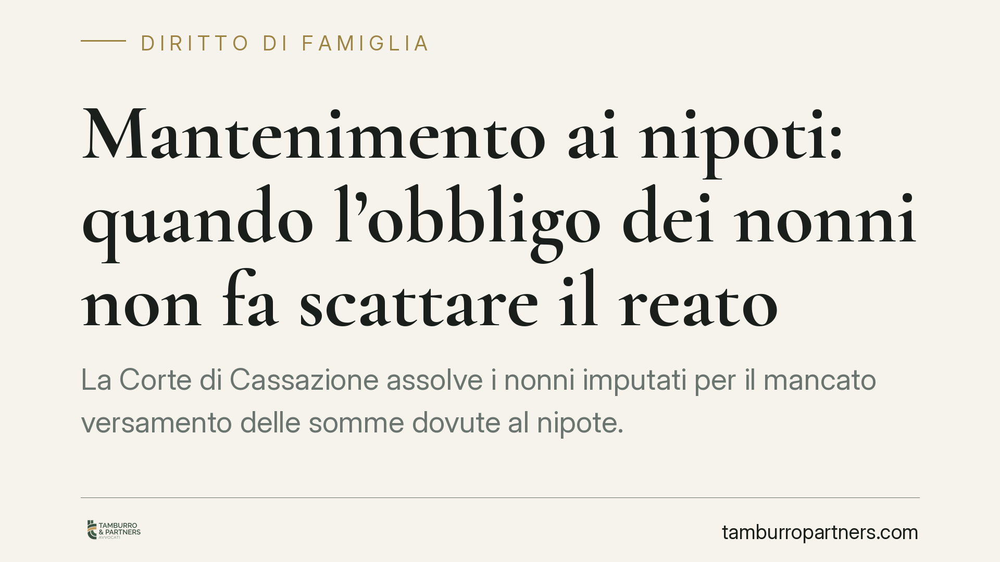

Mantenimento ai nipoti: quando l'obbligo dei nonni non fa scattare il reato
La Corte di Cassazione assolve i nonni imputati per il mancato versamento delle somme dovute al nipote. L'obbligo grava in via primaria sui genitori; quello degli ascendenti è soltanto sussidiario e, sul piano penale, presuppone la prova rigorosa dello stato di bisogno del minore e dell'incapacità economica di entrambi i genitori. Una pronuncia che ridisegna i confini della responsabilità familiare.

Il caso
I nonni vengono chiamati a rispondere penalmente per non aver provveduto al mantenimento del nipote minore, in una situazione in cui il padre risultava disoccupato. La Corte di Cassazione, Sezione VI Penale, li assolve, ribadendo un principio spesso trascurato: l'obbligo di mantenimento dei figli grava in via primaria ed esclusiva sui genitori. L'intervento degli ascendenti è meramente sussidiario e scatta solo a condizioni precise.
Inquadramento normativo
Occorre distinguere due istituti che vengono spesso confusi.
Il mantenimento dei figli minori trova fondamento nell'art. 316-bis del Codice civile (che ha assorbito il previgente art. 148 c.c.): quando i genitori non hanno mezzi sufficienti, gli altri ascendenti sono tenuti a fornire loro i mezzi necessari affinché possano adempiere ai propri doveri verso i figli. Si tratta di un obbligo di natura sussidiaria: presuppone, cioè, che entrambi i genitori siano incapaci di provvedere.
Diverso è l'obbligo alimentare, disciplinato dall'art. 433 c.c., che elenca l'ordine dei soggetti tenuti a prestare gli alimenti (il sostegno per chi versa in stato di bisogno e non è in grado di provvedere al proprio sostentamento). Gli alimenti non coincidono con il mantenimento: hanno presupposti, contenuto ed estensione differenti. La sovrapposizione tra i due piani è un errore concettuale che, in sede di contestazione, può ribaltare l'esito del giudizio.
Sul versante penale rileva l'art. 570 c.p., che punisce la violazione degli obblighi di assistenza familiare. Ma perché il reato sussista in capo ai nonni non basta il mancato versamento: occorre che gravi su di loro un obbligo giuridicamente esigibile, e che questo obbligo sia stato violato.
Il principio affermato
La Cassazione precisa che l'obbligo dei nonni sorge solo in presenza di due elementi, che vanno provati in modo rigoroso:
- un effettivo stato di bisogno del minore, non presunto né dedotto astrattamente;
- l'insufficienza dei mezzi di entrambi i genitori, e non solo di uno.
Nel caso esaminato, la disoccupazione del padre non è sufficiente. Nulla era stato dimostrato circa la posizione economica dell'altro genitore. In assenza della prova che nessuno dei due genitori fosse in grado di provvedere, l'obbligo sussidiario degli ascendenti non era sorto: di conseguenza, non poteva configurarsi alcuna responsabilità penale per la sua violazione.
> Nota sulla pronuncia: la decisione è riferita alla Sezione VI Penale della Corte di Cassazione. Chi intenda richiamarla in atti verifichi numero, data di deposito ed eventuale massima ufficiale presso le banche dati istituzionali, poiché gli estremi circolati nelle fonti giornalistiche non sempre sono immediatamente controllabili.
Implicazioni pratiche
Per i nonni, la pronuncia rappresenta un argine importante. Non è raro che, di fronte alla difficoltà economica di un figlio, si dia per scontato un dovere immediato e incondizionato verso i nipoti. Non è così: l'obbligo è di secondo grado e condizionato.
Per il genitore che invoca l'intervento degli ascendenti, la conseguenza è speculare: non basta allegare la propria difficoltà. Serve dimostrare l'incapacità economica di entrambi i genitori e il bisogno concreto del minore.
Sul piano penale, infine, resta fermo che la responsabilità ex art. 570 c.p. richiede un obbligo preesistente e certo. Dove l'obbligo civile non è sorto, non può esservi reato.
Cosa fare in concreto
- Distinguere i piani: verificare se ciò che viene richiesto rientri nel mantenimento (art. 316-bis c.c.) o negli alimenti (art. 433 c.c.), perché presupposti e prove cambiano radicalmente.
- Documentare la situazione economica di entrambi i genitori: redditi, patrimoni, capacità lavorativa. La prova deve riguardare tutti e due, non soltanto quello disoccupato.
- Provare lo stato di bisogno del minore con elementi concreti e attuali, evitando affermazioni generiche.
- Ricostruire l'ordine degli obbligati prima di avviare qualsiasi azione o aderire a richieste di versamento, valutando l'effettiva sussistenza dei presupposti.
- Conservare ogni traccia documentale delle somme eventualmente corrisposte e delle comunicazioni intercorse, utili in caso di contestazione civile o penale.
Disclaimer
Contributo informativo a cura di Tamburro & Partners - Avv. Giuseppe Tamburro. Non costituisce parere legale.
Ogni famiglia ha il suo equilibrio.
Separazione, divorzio, affidamento, assegno: se vuoi un confronto riservato su una specifica situazione, scrivi allo studio. Ti rispondiamo entro un giorno lavorativo.